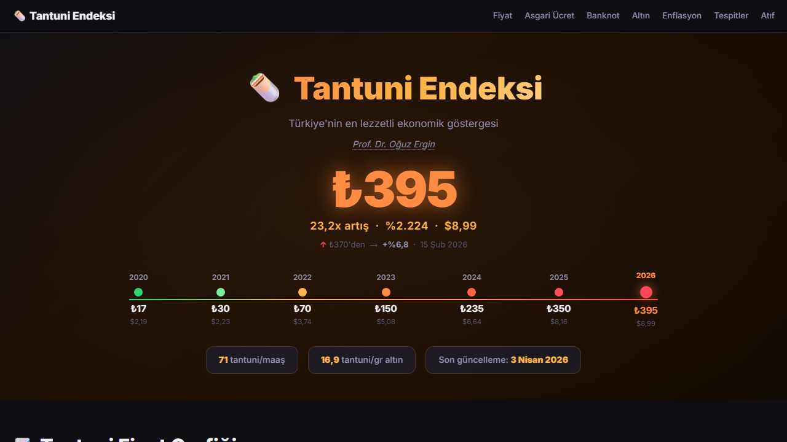
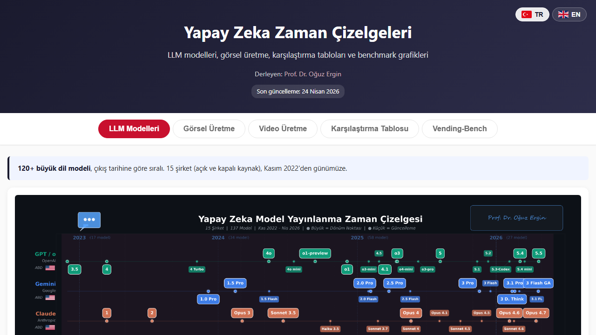
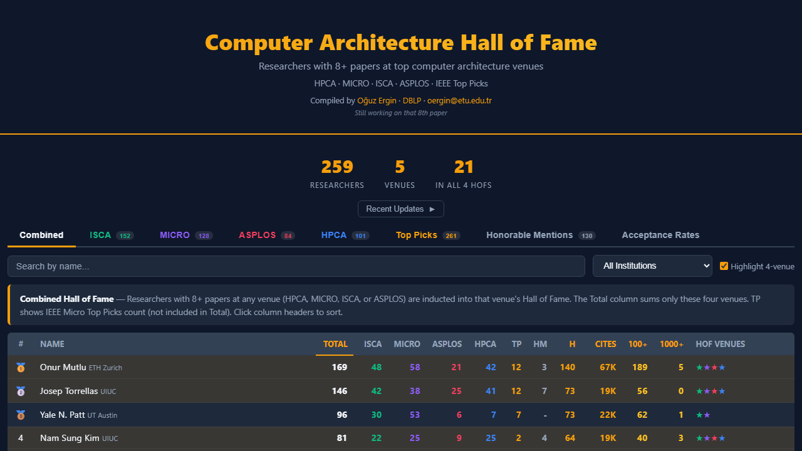
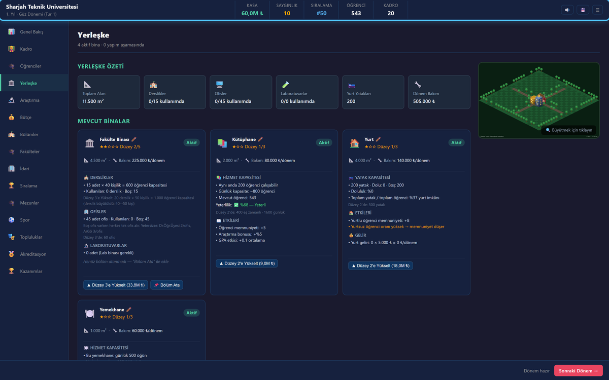

Açık Projeler
Kamuya açık veri, görselleştirme ve eğitim projeleri. Hepsi GitHub üzerinden erişilebilir.
Tantuni Endeksi

Türkiye'de tantuni fiyatlarının zamana ve şehre göre değişimini takip eden açık veri projesi. Sosyal medya üzerinden topluca güncellenen veri seti, enflasyonun günlük yaşama yansımasını somut bir gösterge ile takip etmeyi amaçlıyor.
Erişim: tantuni.oguzergin.net
Yapay Zekâ Model Çizelgesi (AI Model Timeline)

Büyük dil modellerinin (LLM) ve görsel/video üreten yapay zekâ araçlarının zaman içindeki gelişimini görselleştiren interaktif çizelge. Türkçe ve İngilizce olarak yayında. Yeni model çıktıkça güncellenir.
Erişim: yapayzeka.oguzergin.net Kapsam: LLM (Mythos, Opus 4.7, Sonnet 4.6, GPT-5.5, Gemini 3.1 vb.), görsel modeller (Midjourney V8, Imagen 4, MAI-Image), karşılaştırma tabloları, 12+ benchmark.
Bilgisayar Mimarisi Ustaları (CompArch HoF)

Bilgisayar mimarisi alanında HPCA, MICRO, ISCA, ASPLOS konferanslarındaki en etkili yazarları ve kurumları görselleştiren açık veri projesi. IEEE/ACM "Top Picks" seçimleriyle entegre.
Erişim: prof-oguzergin.github.io/CompArch-HallOfFame
Rektör Oldum: Üniversite Yönetim Oyunu

Bir üniversiteyi sıfırdan kurup dünya sıralamasında zirveye taşıyan, tarayıcıda çalışan açık kaynak yönetim simülasyonu. Akademik kadro transferi, öğrenci kontenjanı, bütçe dengesi, TÜBİTAK ve AB Horizon projeleri, 50 rakip üniversiteyle yarış. Football Manager mantığı, üniversite arayüzü.
Erişim: rektoroldum.oguzergin.net Kaynak kodu: github.com/prof-oguzergin/rektor-oldum — MIT lisansı, hata bildirimi ve özellik önerisi GitHub Issues üzerinden açık.
Diğer Açık Kaynak Çalışmalar
Tüm projelerin kaynak kodu ve dokümantasyonu için: github.com/prof-oguzergin